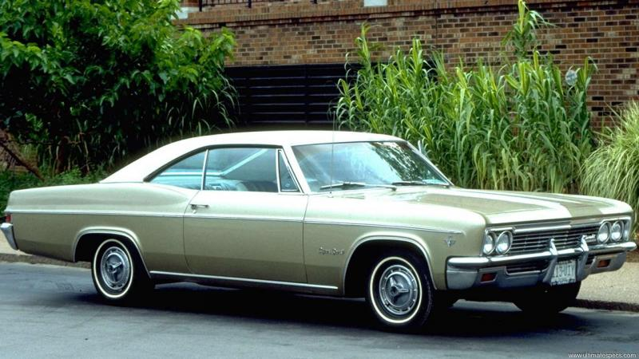

Esse é um site voltado ao tema carros antigos, onde você pode saber mais sobre o universo incrível dos carros
antigos, contando com carros marcantes das séries de tv, dos cinemas, que os melhores de suas épocas e muito
mais
Carro do dia:
Impala 67

Ficha Técnica
Chevrolet Impala IV 6.5 V8 Carroceria, Modelo e Produção
Geração: Impala 4
Tipo de Carroceria / Configuração : Coupé
Num. de Portas : 2 portas
Chevrolet Impala IV 6.5 V8 Desempenho / Prestações
Velocidade Máxima : - km/h / - Mph
Aceleração 0 a 60 milhas (0 a 96 Km/h) : 9.10 s
Aceleração 0 aos 100 km/h : - s
Chevrolet Impala IV 6.5 V8 Informação técnica do motor
Motor : V 8
Código de Motor : -
Disposição : Longitudinal
Cilindrada : 6490 cm3 / 396 cu-in
>
Diâmetro dos cilindros x Curso dos pistões : 104.00 x 95.50 mm 4.09 x 3.76 polegadas